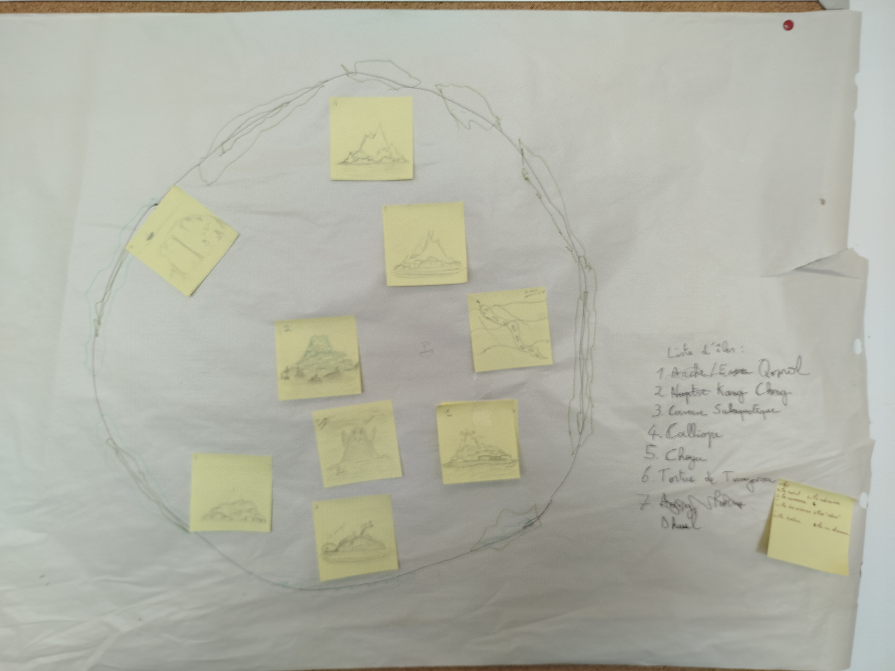
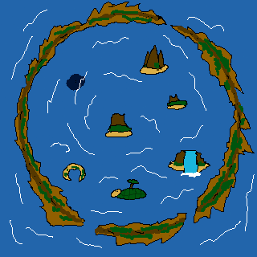
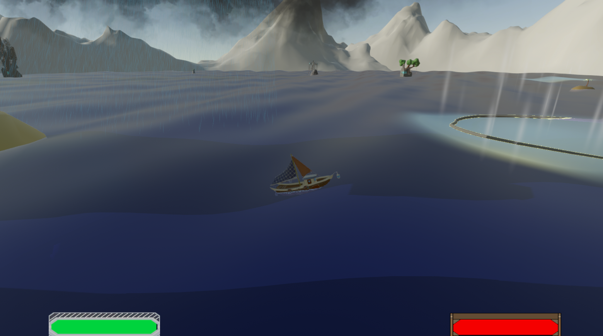
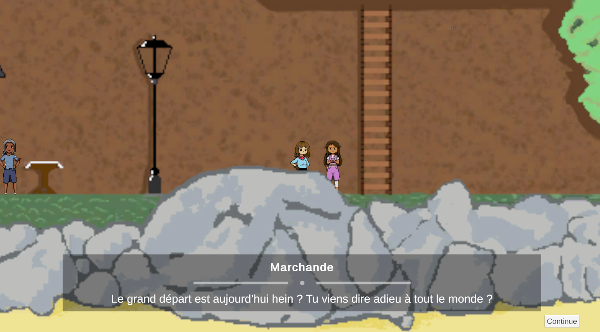

Cyclos : Les flots incompris
Dans un monde solarpunk submergé par les eaux, incarnez Naya, cryptozoologiste. Naviguez sur des eaux agitées et rencontrez les créatures étranges qui vous entourent. Parlez avec les autres habitants et découvrez le mystère à l’origine du monde de Cyclos dans ce voyage vers l’altérité.
Dans ce jeu, j'ai été responsable du world design (conception de la carte du monde et du lore du jeu), du level design, et d'une partie de la programmation : simulation de bancs de poissons (boids), IA, animation procédurale.
Crédits
- Raphaël Blanchard
- Matteo Basso
- Jessica Ferreira
- Antoine Belliard
World design


Animation procédurale
Boids
Screenshots

